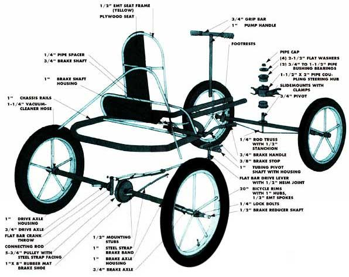

SHOP SHORT
TWO -WHEELERS DON'T HAVE TO be the only game in town. This isn't news to those who spent their fun-filled youth pumping the daylights out of a pipe-and-wheel contraption that was called an "Irish Mail." Well, here's a modern version of that pump scooter, and it can be built with electrical metallic tubing (EMT) and some odds and ends.
The necessary tools include a small welder and two different tubing benders (to handle 1/2" and 1" EMT), as well as a hacksaw, an electric drill with bits, a screwdriver, a round file, a measuring tape, a pipe wrench, and a coping saw. If you're purchasing new electrical conduit (in 10 lengths), you'll need two complete 1" sections, one 3/4" piece, and three 1/2" lengths to handle most of the job. Also required are an additional 2' of the 1/2" size and an 8" length of 1 1/4" tubing. The two-piece seat can be cut from a single 20" X 28" slab of plywood.
The chassis is made from two 58" lengths of 1" conduit which are bent to the same contour, then joined to form a sort of paddle shape. To curve these sections properly, choose one and-starting at either end measure off 4". Make a 90° bend at that point, which should take up about 10".
Mark off 5" more, start a 45° arc (this one uses up 5"), leave an 8" straight section, form the final 45° curve, and then determine the length of the remaining leg (it should be about 21").
Once you've curved a pair of the tubular side rails, join them by temporarily placing your 1 1/2" pipe coupling between the parallel front tubes as a spacer, then welding the butted rear tips to each other. Use a scrap of 1"-diameter mechanical tubing (or filed-down 3/4" pipe) inside both parts to serve as a bridge.
The rear axle housings are welded to the chassis next, and these should be positioned so they intersect the right-angle bends at midpoint and are equally divided by the joint. A 2 1/2" section of 1/2" conduit holds each one to the frame at the inner ends, but since the goal is to mount the housings true for proper wheel alignment and camber, these stubs may have to be made slightly longer or shorter to suit your individual chassis.
The rest of the frame components are made from 1/2" EMT, which can be fine-trimmed as necessary. A 20" cross-member fastens between the side rails at a point 10 1/2" in front of the butt joint at the rear. Then two 90° pieces-one 9" and the other 24" in total length-are similarly arranged to help support the plywood seat.
A one-wheel brake is all that's needed for this simple "pump about." All the cart's wheels canbe fabricated from
discarded bike rims.
To form the seat-back frame, bend both a 30 1/2" and a 35" conduit section into the shapes indicated, then weld the wider piece to the upper surface of the frame rails (1" forward of the crossmember) at an angle of 60°. The narrow hoop mounts atop that at an 85° bias to the chassis. Then the seatback strut, along with the 4 1/2" rear support, is fastened in place to lock the axle housings to the seat structure.
At this point, complete the steering hub and pump handle. Both of these parts have to be adjustable, so they're designed to slide within the parallel front frame rails as necessary, and can be held in place with hose clamps. The hub is simply the 1 1/2" pipe coupling welded to each half of a longitudinally split section of 11/4," EMT, then capped at each end with 1 1/2" to 3/4" pipe bushings. The threads within the center hole in each reducer must be filed out if it's to accept the shank of a 3/4" nipple.
The handle is nothing more than a section of 1" conduit equipped with 3/4" X 14" upper grip bar and a 1" X 7" pivot shaft-at the lower end-made from a scrap of mechanical tubing (this piece can be replaced with a length of 4 3/4," pipe if you don't mind filing its outer surface a bit). A 3/16" X 1 1/2" X 7" hunk of flat metal welded perpendicularly to the midpoint of the pinion functions as the drive lever, and the 1" shaft rides inside a pair of 1" X 2 1/4," EMT stubs. These stubs are clipped to the chassis rails with half sections of 1 Y" conduit and hose clamps.
A buttress front axle allows easy foot steering, and it's made by welding a 3" piece of 1/2" EMT, then a 2 1/2" washer and3/4" X 3 3/4" pipe nipple combination to the center of, and perpendicular to, the 1" X 30" conduit axle. A 27" length of 1/4," reinforcing rod trusses the assembly, and two angle iron sections, fastened to the ends of the housing and tilted toward the rider, form modest footrests. The axle itself is merely a 40" stretch of 3/4" conduit run through the housing. The front wheel hubs ride on the shaft and are held in place with 1/4" bolts pinned through the tube's ends.
To attach the front assembly to the steering hub, just slip the 3/4" pipe center pivot through the two bushings in the coupling and lock it in place with a large washer and 3/4" pipe cap.
The drive and brake mechanisms also work on a sleeve-within-a-sleeve principle. The 3/4" X 17 1/2" drive axle shaft utilizes a 3/16'' X 1 1/2" X 5" flat metal crank throw (a 2 1/2" washer, welded in place 1" from that bar, makes a good walk stop). The braked (right side) wheel is fastened to a 3/4" shaft that houses-and is bolted to-a 1/2" X 17 1/2" pipe, which is then connected to a 5 1/2" pulley. The right axle shaft uses an anti-slide washer, as does the drive axle, and it's carried inside the axle housing as well.
A one-wheel brake is all that's needed for this simple "pump-about," and that can be worked out by tacking a 1" X 9" EMT housing to the upper part of the chassis just behind the crossmember. Two more conduit sections, welded at a right angle, provide a brake handle and shaft. Once this control is slipped into place and a small spacer and stop are installed, a 27" length of strapping band is fastened between the brake shaft and crossmember, with the pulley nestled in the loop created. In practice, this arrangement works reasonably well, since a good deal of tension can be drawn on the strap through the mechanical advantage of the small pivot. But the system performs even better if the pulley groove itself is covered with a steel band, and the inner side of the steel loop is then faced with a strip of "grabby" rubber matting to act as a brake shoe.
All the cart's wheels can be fabricated from EMT scraps and discarded bike rims, since regular spoked wheels probably couldn't stand up to the side thrusts placed upon them by a "four-footer." To mak\e sturdy units, use 1" X 4" conduit hubs, centered within the rims. For each one, cut five 1/2" spokes to length (from 7" to 7 1/8 long, depending on the rim). Lay the rim on a slab of plywood, mark its circumference, and then bore a hub-holding hole dead center. By using spacer blocks to lift the rim and spokes to the hub's midlevel, you can tack all of your parts in place first and can finish welding them when you're satisfied with the assembly.
As soon as the wheels are bolted on the axle shafts (short lengths of vacuum-cleaner hose make nice grease covers to fit over the axles between the hubs and the housings), you can complete the pumper by fastening the seat boards and the connecting rod in place. To keep the driving force aligned along the axis of the cart, the 1/2" X 29 1/2" rod has a small offset in it about 4" from the crank (rear) end. A 1"-long piece of 1/2" conduit welded to the end of the connecting rod serves as a wrist sleeve through which the driving mechanism can be bolted to the crank throw. At the front end of the rod, a 1/2" nut allows for the installation (and adjustment) of an eyebolt, or-if you have expensive tastes-a Heim joint.
With everything welded, bolted, and screwed in position, you can paint your chariot. The final step can be tricky: trying to keep the children off this four-wheeler until the paint dries!
|
 |
|
|